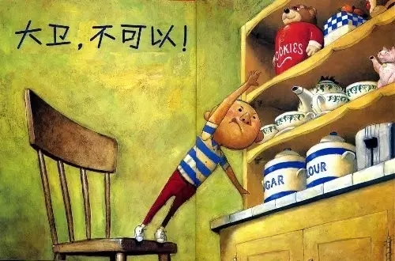
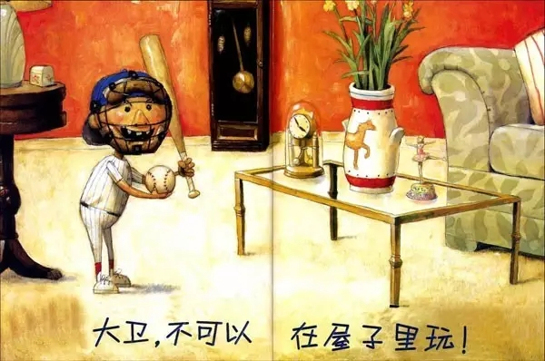
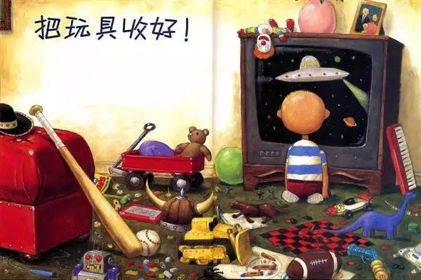

互惠动态
|
|
你不教育孩子，总会有人替你狠狠教育他...
有时候，总是觉得孩子还小
有时候，总是给他找各种理由
但，外面的世界不会这么宽容
虽然言辞有些激烈，但句句在理
一起读读吧...
我看电影的时候，偶尔会碰到这样的小孩，在电影开始后，静坐一会儿就坐不住了，开始满场乱跑。而做父母的呢，也不出声制止，就任由孩子在电影院吵闹，蹦跶。
同学给我讲过她遇到的一件事情，她十二岁生日的时候，同学朋友送了很多礼物。有朋友送了一个花生的音乐盒，精致漂亮极了。刚拆开，被一起来的表妹看到了，5岁的她很喜欢，就直接张口问她要。同学不是很乐意，怎么说也是朋友送的礼物。可是她不给，表妹就又哭又闹，有趣的是同学妈妈的态度，她很大度，很宽容地直接把礼物送给了表妹。理由是她那么多礼物呢，送一个给表妹又无妨。
肯定有人会不以为然，理由也能找出一大堆，“孩子淘气是天性啊，活泼点才惹人爱。”“亲戚家的小孩，给她又怎么了”……
家长们对于孩子的态度总是宽容的，心软的。他们理直气壮地说：”他还小，不懂事，你就让让他。“
所以，小就成了天然的护身符，自带有理光环（我小我有理），就可以不懂事，就可以被原谅。

真的是这样吗？
孩子小，爱玩，爱闹是天性，但也因为小，他们对于是非对错，并没有成人那么清楚明白。他们会凭着天真的本性做事，没有父母的引导教育，这些本性导致的后果，有些在成人眼里无伤大雅，如电影院里跑跑，拿走姐姐的礼物……有些则可能导致很严重的伤害。
新闻中曾经报道过一件事：因嫌楼外施工的电钻声太吵，正在8楼屋内看动画片的10岁男孩，一气之下用小刀将施工者下方的安全绳割断，致使其悬在半空动弹不得，经消防大队紧急出动后才将人安全救下。面对警方的询问，小孩说，“我当时在看《喜羊羊》，外面钻机打墙的声音太吵，我就用刀子把绳子割断了。”更扯的事儿还在后面，孩子的爸爸在赔偿的时候，只赔了一！条！安！全！绳！
呵呵！别再拿“小”说事儿了，每个熊孩子的背后必然站着一个熊家长。他们的熊行为，都是家长放任的结果。

有个很旧的故事
一个母亲在网上发帖说：在餐厅吃饭，就因为儿子稍微调皮了一点就被打了一耳光！气得她现在还在发抖。
原来，这位母亲带儿子去附近的餐厅吃饭，她儿子喜欢到邻桌到处跑跑看看，几次去骚扰吃螃蟹的邻桌，最后因为跑到隔壁桌上去抓螃蟹，被别人把手甩开后，动手打了这桌的人，结果被回打了……
这个母亲愤愤不平的点大概就是我孩子小，调皮点很正常，你怎么能和他一般见识？他小，可做妈妈的你还小吗？你难道不知道约束一下自己孩子的行为吗？
孩子再小，总是要长大的。做家长的现在放弃了教育孩子的权利，以他小的名义原谅他，甚至要求别人原谅他。那么，有一天，当他走出学校，走上社会，再做出一些熊行为的时候，没有人会对他再宽容了。你的孩子，你不去教育，总有人会代替你教育他。到时候，后悔也晚了。

孩子长大了就好了/懂事了
我相信还会有很多家长会说类似于“孩子长大了就会好的”的话，孰不知，在溺爱和错爱下的孩子，长大同样不会被社会所“原谅”。
有一个学生，喜欢钻研奥数，却走路慢慢吞吞总爱迟到，同学给他起了个雅号叫“奥特慢”。后来他被父母送到英国念高中。有一次回国，他给我们讲了个经历，却对自己感触很深。原来他假期去一家华人开的中餐厅打工，结果第一天上班就迟到了五分钟，于是被解雇了。他没有想到，第一次因为迟到所受到的严厉惩罚，竟是丢了饭碗。而最令他醍醐灌顶的，是那个华人老板的最后忠告：“小伙子，如果我不解雇你，你就不知道外面的世界有多残酷！”
在中国式教育的娇宠之下，让学生罚站也如走钢丝，迟到自然可以逍遥法外。但多年以后，因一种积习所引发的重创，这该是多么痛的领悟啊！
一个老师分享的故事
记得多年前，当班主任，处理过一起校园单车失窃案，案情很快就水落石出，主演就是班上的一个熊孩子。单车物归原主后我将他和他的家长叫来，准备和犯错的孩子和家长好好聊聊，他的父亲却说：“我们家不差钱，孩子就是一时贪玩，说多了会伤害他的自尊。”也许，这位天真的爸爸认为，有钱即不算窃，贪玩就不犯法。如果有一天，比尔盖茨突发奇想去难民营行窃，那就只能当做过家家吗？
其实，我只是想叮嘱一句——孩子，长大之后没有儿戏，校园之外没有温室！请记住，外面的世界不会轻易原谅你！
是的，亲爱的孩子，老师是不能把你怎样，但外面的世界可以。家长，你可以原谅孩子，但外面的世界不会轻易原谅。孩子的成长没有儿戏。

关于互惠，您了解得够多么？
请外国学生来家庭照顾孩子，辅导孩子外语？
只了解这些是不够的！
获取更多信息请参考以下方式：
联系ASC：
电话：86-21-61116069(上海中心）
86-25-66065662（南京中心）
全国家庭均可申请！
手机：15601666586（可加微信）
Q Q：3259637585
微信：asc-center
邮箱：info@asc-center.com
网站：www.asc-aupair.com

感谢您对我们的关注